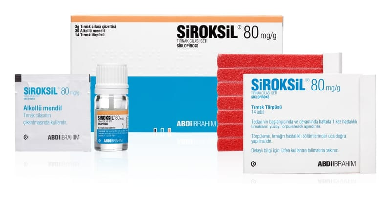

Siroksil 80 mg/g Tirnak Cilasi Seti, 3 g

Ne için kullanılır
KT · Bölüm 1SİROKSİL, siklopiroks adlı etkin maddeyi içerir. Siklopiroks, topikal kullanım için antifungaller adı verilen bir ilaç grubuna dahildir. Bu gruptaki ilaçlar mantar tedavisinde kullanılır.
SİROKSİL, tırnaklardaki mantar hastalıkları tedavisinde kullanılır.
SİROKSİL, tırnak cilası setinin, 1 gramında 80 mg siklopiroks etkin maddesi bulunur. Kutu nun içinde 3 gram tırnak cilası çözeltisi içeren şişe, 30 adet alkollü mendil, 14 adet tırnak törpüsü yer alır.
SİROKSİL, renksiz veya açık sarı renkli, karakteristik kokulu, gözle görülür kirlilikler içermeyen berrak çözeltidir.